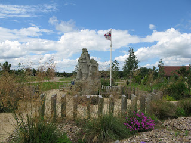

The National Memorial Arboretum had been nagging at us for months, being a cultural resource of national significance situated within our mapping “domain”, and having only the sketchiest of coverage in OSM (thanks to those who had got it to at least that level). So one evening in the pub we decided to tackle mapping its 150 acres (0.405 ha).
The National Memorial Arboretum sits on a piece of reclaimed gravel pit alongside the River Tame. Inaugurated in 1997, it was designed to rival the Arlington National Cemetery in Washington DC. Its obvious military bias is now being somewhat softened by the appearance of memorials to any event – for instance there is a grove of trees where those reaching their diamond wedding anniversary (60 years) can plant a tree and have it dedicated to them.
Given the horrendously wet summer Britain has been experiencing, the three day survey carried out by mappa-mercia volunteers (all of two of us) spread out over a couple of weeks was a squelchy affair – a reclaimed gravel pit adjacent to a river has a pretty high water table!
There are over 200 memorials ranging from the simplest plaque; large gardens; benches; flagpoles; ornate sculptures on plinths; relics from battlefields and campaigns (for example pieces of the Burma Railway from WWII) to the elaborate centrepiece of the Armed Forces Memorial. And of course the 50,000 trees which are either arranged into named groves or are individually dedicated.
Here’s an example of a memorial – this one is for the Royal National Lifeboat Institution which has benches, a sculpture,pathways and a flagpole all contained within a garden designed to recreate the feel of a shingle beach:
We concentrated on the memorials, gardens and groves and we think we’ve got about 95% of them. The hundreds of benches and trees that have individual dedications overwhelmed us and will take someone more dedicated than us several months of surveying. Of course memorials are being constructed constantly so periodic resurveys will be necessary. The day after our final survey a new memorial to the Parachute Regiment was due to be dedicated and there were feverish preparations underway for the ceremony.
In any case a resurvey will be required as the Visitor Centre is due to be expanded (reconstructed would be a better description judging by the plans on display) to cope with the visitor numbers- currently at 300,000 annually. Many visitors are grieving comrades or relatives, and there are of course the regular annual anniversary ceremonies by many veterans’ associations and military units; but as the site is such a fantastic educational resource for British history I guess it attracts many school visits also.
The problem with micro-surveying at this level was that the POIs to be recorded (memorials,benches,trees, flagpoles etc) were often closer together than the accuracy of our GPS units (sub 5 metre), so that interpreting GPS data could only take place with the help of a huge number of photographs to show proximity and orientation. So the usual rule of thumb that one hour of surveying translates to one hour of editing became more like 2- 3 hours of editing as GPS traces, notes and photos all had to be cross-referenced for accurate placement. Also most names of memorials were long and complex and needed careful attention to spelling.
The resulting map can be viewed here. As can be seen the current default rendering has problems with so many names being so close together that it’s difficult to display them all. Anybody want to have a go at solving this? Is it soluble?
There remains one other major mapping problem. The National Memorial Arboretum is part of the National Forest : an ambitious project to plant 200 square miles of central England with trees to recreate the original forested landscape. 7.8 million trees have already been planted and the tree cover increased from 6% to 18%. How to map this? It’s not a national park. It’s not contiguous, but a patchwork. It’s not all forest but has open spaces also. Most of the tree-planting is not mature. It’s run by a private company created by Act of Parliament under the auspices of a government department DEFRA (Department for the Environment Food and Rural Affairs) – so is it leisure=park? Should its whole outline be mapped and named as a region with a ceremonial administrative boundary? Should the planted areas be mapped as a multipolygon and added to as new areas are acquired and planted? How should the constituent parts be named: as National Forest from the multipolygon, or for each area where it has a separate name? Any comments are welcome.
Next national resource in our region to tackle: the recently-opened National Football Centre at St George’s Park near Burton-on-Trent.


{kind=link}